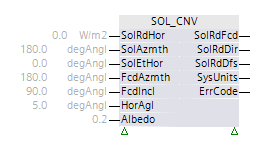
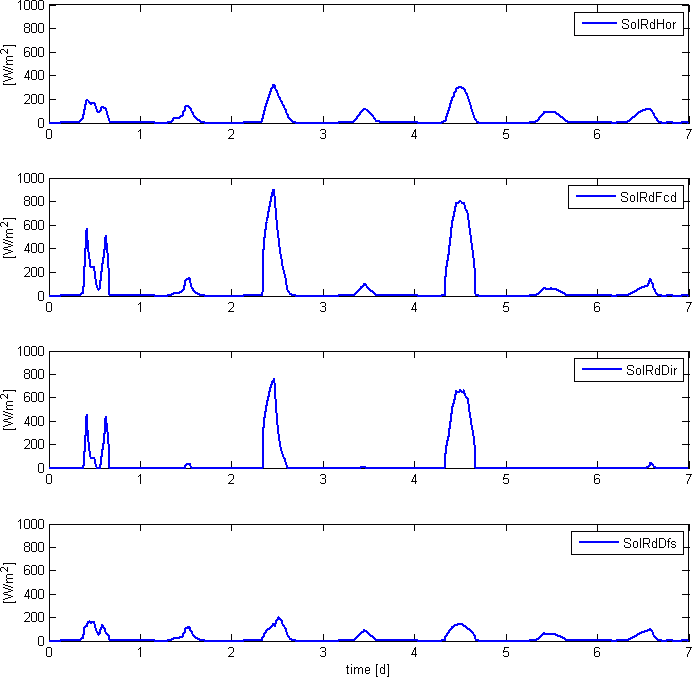

[SOL_CNV] 太阳辐射转换
功能块 SOL_CNV 将水平面上测量的全局辐射值转换为任意方向平面（例如，垂直或倾斜的立面）上的全局辐射值。
SOL_CNV 将在水平面上测量的全局辐射值转换为任意方向平面（例如，垂直或倾斜的立面）上的全局辐射值。该转换取决于通常由 SOL_POS 计算的太阳位置（太阳高度角和太阳方位角）以及平均水平角和地面的反射特性。
Calculates global radiation value on an arbitrarily oriented surface
输入 [SolRdHor] 是水平面上太阳辐射的测量值。为了更精确的测量，可以使用总辐射表。

对于通常使用 SOL_CNV 实现的遮阳应用，一个基于太阳能电池的传感器就足够了（例如，水平安装的西门子太阳影响传感器 QLS60 或类似传感器）。自加热传感器/housing 是有益的，因为这可以避免冬季由于设备上的雪而导致测量值不正确。
通常需要通过SOL_POS计算出的太阳位置（太阳高度角和方位角）来转换在水平面上测量的辐射值。
转换还需要配置立面方向（立面方位角和立面倾斜度）。
水平角度 [HorAgl] 决定立面如何遮挡周围建筑物、地形和树木：
- A building on flat ground that is not shaded by surrounding buildings or trees has [HorAgl] = 0°.
- For typical buildings, [HorAgl] is usually larger than 0°. For solar protection applications using SOL_CNV, it is generally sufficient to use a constant horizontal angle for a specific facade.
Surface reflective properties
反照率是漫反射表面（即非自发光）反射特性的测量值。它由反射光量决定，介于 0 和 1 之间。
各种表面的推荐配置：
表面 | 配置 |
|---|---|
新雪 | 0.80 - 0.90 |
老雪 | 0.45 - 0.90 |
云 | 0.60 - 0.90 |
沙漠 | 0.30 |
萨凡纳 | 0.20 - 0.25 |
田地（未开垦的） | 0.26 |
草 | 0.18 - 0.23 |
福雷斯特 | 0.05 - 0.18 |

输入 | 描述 | 数据类型 | 默认值 |
|---|---|---|---|
|
SolRdHor | Solar radiation on horizontal plane 测量的水平面上的太阳辐射（全球辐射） | 真实的 | 0.0 [W/m2] 0.0...1500.0 [W/m2] |
SolAzmth | Solar azimuth angle 太阳方位角，以 SOL_POS 计算 | 真实的 | 180.0 -360.0…360.0 |
0°：北 | |||
|
SolEtHor | Solar elevation angle from horizon 距地平线的太阳高度角，以 SOL_POS 计算 | 真实的 | 0.0 -90.0…90.0 |
0°：太阳在水平面上 | |||
|
FcdAzmth | 立面方向：Facade azimuth angle Note | 真实的 | 180.0 -360.0…360.0 |
0°：朝北的立面。 | |||
|
FcdIncl | 立面方向：Facade angle of inclination Note | 真实的 | 90.0 -180...180 [°] |
0°：水平立面朝上（天顶）。 | |||
HorAgl | Average horizon angle 指示立面如何受到周围建筑物、地形和树木的遮挡。
| 真实的 | 5.0 [°] -5.0...90.0 [°] |
Albedo | Albedo 反照率是漫反射（即非自发光）表面反射特性的测量值。它是由反射光的量决定的。 | 真实的 | 0.2 0.0... 1.0 |
输出 | 描述 | 数据类型 | 默认值 |
|---|---|---|---|
SolRdFcd | Solar radiation on facade | 真实的 | 0.0 [W/m2] |
SolRdDir | Direct solar radiation on facade | 真实的 | 0.0 [W/m2] |
SolRdDfs | Diffuse solar radiation on facade | 真实的 | 0.0 [W/m2] |
|
SysUnits | System of units 表示system of units由块使用。 | 整数 | 1: International system of units (SI) (fallback) 1...5 |
1: International system of units (SI) (fallback) | |||
ErrCode | Error code indication | 整数 | 0: No error |
= 0 - No error | |||
将水平面上的全局辐射测量值转换为任意方向表面上的全局辐射值（例如，以减少单个传感器的数量）。
估计当前漫射光比率（例如，用于防眩光功能）。
Vertical, southern-facing facade
恒定输入值：
[FcdAzmth] = 180°，[FcdIncl] = 90°（朝南），[HorAgl] = 3°，[反照率] =0.2
输入值随时间变化：
2006年1月1日至2006年1月7日苏黎世测量数据[SolRdHor]：2006年1月1日（当地时间）计算的苏黎世（地理经度8.57°和纬度47.38°）的[SolEtHor]和[SolAzmth]
Diagrams
以下示例显示 [SolRdHor]（输入变量）、[SolRdFcd]、[SolRdDir]、[SolRdDfs]（输出变量）的时间线

Key
[SolRdFcd] | 立面上的太阳辐射 |
[SolRdDir] | 太阳直接辐射立面 |
[SolRdDfs] | 漫射太阳辐射立面 |
[SolRdHor] | 水平面上的太阳辐射作为输入值 |